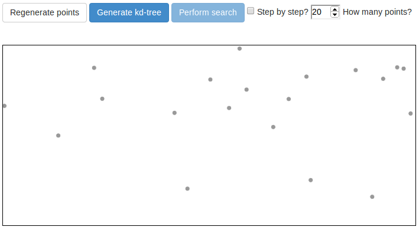
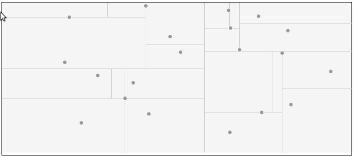
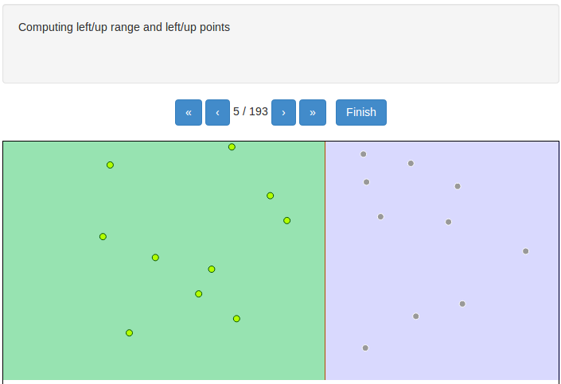
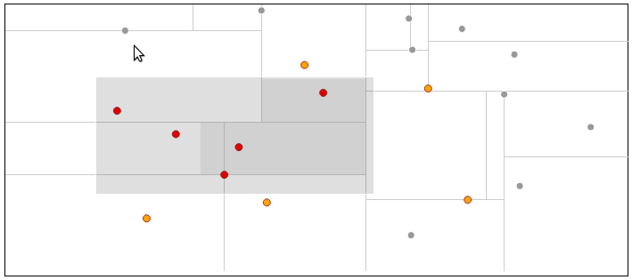
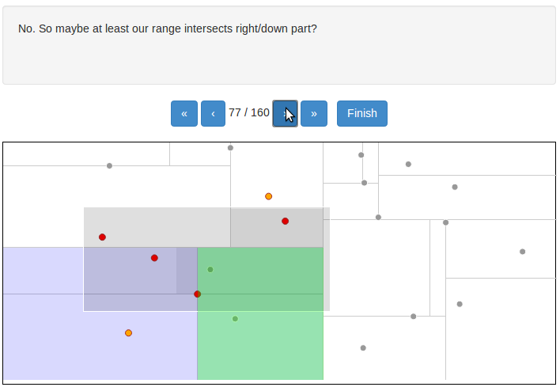

This application visualize kd-tree data structure. You can generate some points, create kd-tree using them and perform range query. Both creation and querying the tree can be done step by step to help you learn the idea behind this structure.
First start with decision how many points you want to generate.
Application can handle easily even more than 300 points
but if you want to understand idea behind the kd-tree and use step-by-step mode
you'd better select 20-30 points. Click the "Regenerate points" button to proceed.

Now you can create kd-tree. You can either simply click on "Generate kd-tree" button
and you'll see generated tree like this:

If you want to deeply understand the idea and tree creation algorithm
check "step by step?" checkbox placed just next to the number points selector and
click "Generate kd-tree" button one more time. You'll see some new controls enabling you
to iterate forward and backward through algorithm steps, giving you detailed description
of each step and visualizing current step. Inside buttons change current step by one,
outside ones rewinds it to the start or forwards to the end. Click on the "Finish" button
in order to close step by step mode.

When you have your tree generated you can perform range query using it.
Start with clicking "Perform search" button which is now enabled.
You'll see a result of a sample query. Now you can select a new range with your mouse
or move and change the size of the existing selection. When you are done with the selection
click on the "Perform search" once again and you'll see the result.
All points that were classified as "in the range" are marked with red color.
All points that were taken into consideration during the query process but not selected
are marked with yellow color.

Similarly as with creation, you can have the algorithm presented step by step
if you check "step by step?" checkbox before clicking "Perform search".

Besides the geometrical visualization characteristic to kd-tree application displays also binary tree visualization of the kd-tree instance in the application memory. Similarly to the geometrical view it updates also in the step by step mode. State of the nodes is denoted by their color: